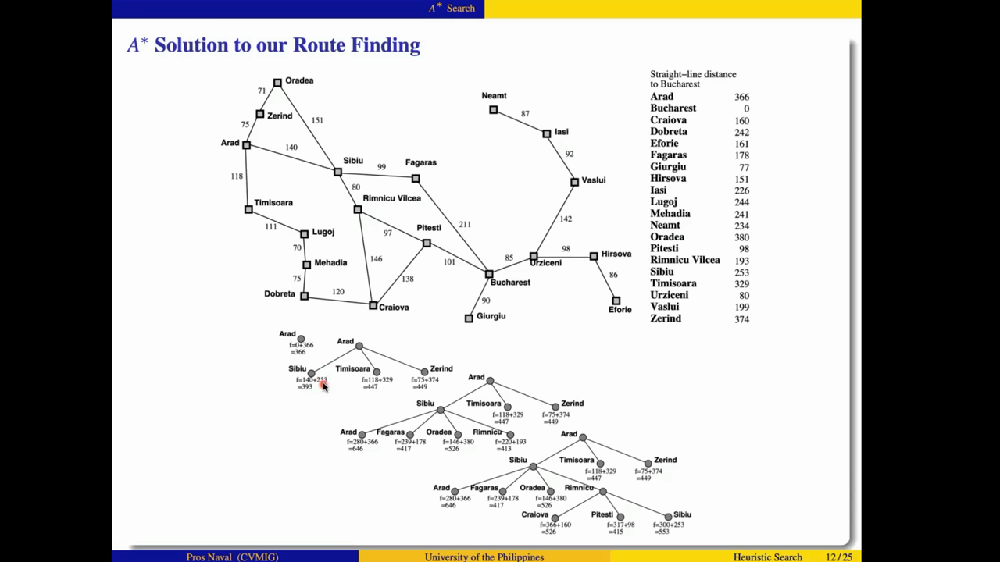
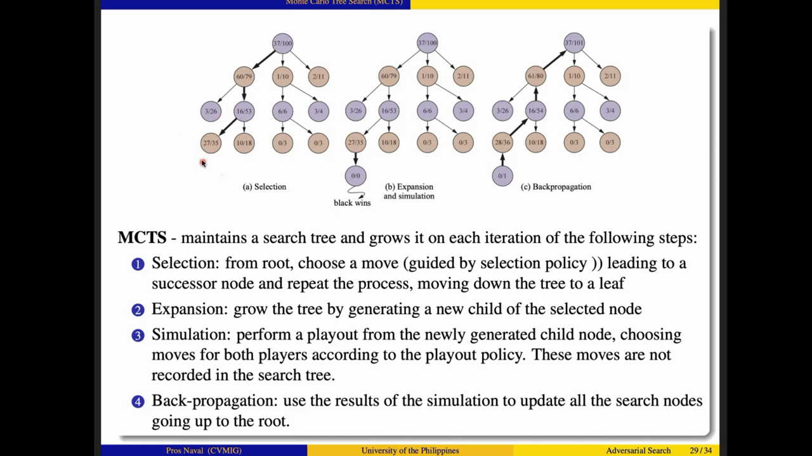

Search: from blind wandering to beating an opponent
Three lectures, one escalating story. 3A: find a goal knowing nothing about where it is.
3B: find it faster with an estimate of the remaining distance.
3C: find it while an adversary works against you.
Built from the verified transcripts, all 100 deck slides, and 65 frames of what the instructor actually pointed at —
every timestamp below cites Lecture-3-diy-handout.md's transcripts.
1 The One Story of Lecture 3: knowledge trades against search
The instructor returns to one law all three hours: the less you know, the more you must search — and each part of Lecture 3 buys back search effort with a new kind of knowledge. Watch the marker slide as the story escalates:
The knowledge ⇄ search trade-off, animated
Part A · Blind Search 1:24:04 · 41 slides
You know nothing about distance to the goal
Choice of node depends only on its position in the tree. Six strategies, all the same algorithm with a different queue. Cost: exponential time — the 35-years table.
Part B · Heuristic Search 44:23 · 25 slides
You know an estimate h(n) of remaining cost
Greedy trusts h alone and gets burned; A★ adds what you already paid — f = g + h — and earns four guarantees. Google Maps runs on this 00:10:43·A.
Part C · Adversarial Search 59:20 · 34 slides
An opponent fights back, under a clock
Full search is impossible, so knowledge moves into evaluation functions, pruning windows, playout statistics, and probability weights.
The sentence that ties 3A to Lecture 1
"If you have complete knowledge, you don't do any search at all. If you have very little knowledge, you'll compensate that by doing more search." 00:19:05·A — the single-state vacuum agent needs only a lookup table; the blind traveler needs BFS.
A Problem-solving agents & the four problem types
A problem-solving agent is "a goal-based agent that decides what to do by finding sequences of actions that lead to desirable states" 00:00:39·A. Its whole life is a three-beat loop:
Formulate → Search → Execute
state the problem
and the goal"]:::fmt --> S["2 · SEARCH
find the action sequence
that achieves the goal"]:::srch --> E["3 · EXECUTE
perform the best
sequence found"]:::exec E -.->|"world changed? new goal?"| F classDef fmt fill:#fef3c7,stroke:#f59e0b,color:#92400e classDef srch fill:#dbeafe,stroke:#3b82f6,color:#1e3a5f classDef exec fill:#f0fdf4,stroke:#10b981,color:#065f46
How much the agent knows decides which of four problem types it faces 00:13:24·A — demonstrated on the two-cell vacuum world: 8 states, 3 actions (move-left, move-right, suck-dirt), goal = states 7 or 8 (everything clean) 00:15:38·A.
1 · Single-state
Knows its exact state and every action's effect 00:16:48·A. From state 5: {move-right, suck-dirt} → done.
Complete knowledge ⇒ no search — "let's just have a lookup table" 00:19:43·A
2 · Multiple-state
Sensors too weak — it only knows it's in one of several states. No sensing needed to win: {move-right, suck-dirt, move-left, suck-dirt} reaches the goal from any initial belief 00:21:21·A.
Reason over sets of states (belief states)
3 · Contingency
The right sequence depends on what happens mid-execution — car driving: traffic, accidents, pedestrians 00:24:09·A.
"Sense, search, execute. Sense, search, execute." — a loop 00:24:45·A · Games live here → Part C
4 · Exploratory
Doesn't even know what its actions do — must experiment "just like newborn babies" 00:26:23·A.
Reinforcement learning's home turf; multi-armed bandits isolate explore-vs-exploit 00:26:53·A
Search problems themselves have exactly four parts 00:27:30·A: a state space, operators, a goal test, and a path cost. Formulation is not bookkeeping — it decides how big your search space is:
8-queens: the same problem, two formulations, twelve orders of magnitude 00:33:54·A
Complete-state
All 8 queens on the board, then shuffle attacked queens within their columns until nothing attacks.
≈ 2.8 × 1015 sequences
Incremental
Place queens one at a time, each in the leftmost empty column, never attacked.
2,057 sequences
"The incremental formulation is obviously much better" — path cost is zero for both (only the final state matters), but the search cost is wildly different 00:33:16·A.
A The search-tree machinery: one algorithm to rule them all
Everything in Parts A and B is one algorithm. Expanding a state means "generate a new set of states by applying all valid operators to that state" 00:38:58·A; doing that repeatedly builds a search tree whose root is the initial state. The tree can be infinite even over 20 cities — paths can loop 00:46:43·A.
function GENERAL-SEARCH(problem, QUEUING-FN) returns a solution, or failure
nodes := MAKE-QUEUE(MAKE-NODE(INITIAL-STATE[problem]))
loop do
if nodes is empty then return failure
node := REMOVE-FRONT(nodes)
if GOAL-TEST[problem] applied to STATE(node) succeeds then return node
nodes := QUEUING-FN(nodes, EXPAND(node, OPERATORS[problem]))
endA node stores five things 00:49:03·A
- state — the world state it represents
- parent — the node that generated it
- operator — the action that produced it
- depth — nodes on the path from the root
- path cost — g so far — Part B's g(n) is born here
The one sentence that unlocks Part B
"The only place where knowledge can be incorporated is in the queuing function." 00:01:44·B (bolded on the slide itself)
Every strategy in Lecture 3 — BFS, DFS, UCS, greedy, A★ — is GENERAL-SEARCH with a different QUEUING-FN. That is the entire design space.
The fringe (frontier) — "the collection of nodes waiting to be expanded" — is "best implemented as a queue" 00:50:34·A with four operations: MAKE-QUEUE, EMPTY?, REMOVE-FRONT, and the star of the show, QUEUING-FN 00:51:45·A.
A One algorithm, six queues: watch BFS and DFS diverge
BFS puts new nodes at the END of the queue 01:00:43·A; DFS puts them at the FRONT 01:10:34·A. That single line of code is the entire difference. Step through both on the same binary tree — same expansions, opposite personalities:
Interactive: the queue IS the strategy
BFS — new nodes join the BACK
DFS — new nodes cut to the FRONT
BFS: complete + shallowest-first
Goal-tests every node level by level, so a shallow solution is found before any deeper one — optimal when path cost never decreases with depth 01:02:20·A. The price: O(bd) time and memory.
DFS: neither complete nor optimal
Dives forever down infinite branches 01:12:18·A, and goal-tests a depth-3 solution before the depth-1 one right next door 01:12:51·A. In exchange: O(bm) memory — it prunes exhausted subtrees as it backs out 01:10:01·A.
Uniform Cost Search (Dijkstra 1959) is the third personality: expand the cheapest node by g(n) — "BFS is just a special case with g(n) = DEPTH(n)" 01:08:19·A. Its guarantee needs one condition: costs never decrease along a path, i.e. every operator cost ≥ 0 01:08:49·A. Depth-Limited caps DFS at depth ℓ (complete iff ℓ ≥ solution depth; note O(bℓ) time but O(bℓ) space 01:15:38·A) — and Iterative Deepening turns that cap into a schedule: limits 0, 1, 2, … until a goal appears 01:16:15·A.
A The price of blindness: 35 years, and the verdict table
BFS expands at most 1 + b + b² + … + bd nodes 01:04:30·A. The deck makes that concrete with b = 10, 1 ms and 100 bytes per node — read the bars (log scale) and find where your patience runs out:
BFS time & memory, b = 10 — deck slide 30 01:05:53·A
| Depth | Nodes | Time | Time, log scale | Memory |
|---|---|---|---|---|
| 0 | 1 | 1 millisecond | 100 bytes | |
| 2 | 111 | 0.1 seconds | 11 kilobytes | |
| 4 | 11,111 | 11 seconds | 1 megabyte | |
| 6 | 106 | 18 minutes | 111 megabytes | |
| 8 | 108 | 31 hours | 11 gigabytes | |
| 10 | 1010 | 128 days | 1 terabyte | |
| 12 | 1012 | 35 years | 111 terabytes | |
| 14 | 1014 | 3500 years | 11,111 terabytes |
"Can you wait for 35 years? I cannot. But I can spend more money if I'm desperate" — buy drives for the 111 TB; you cannot buy the 35 years, and even 100 computers only shrink it to a decade 01:06:25·A–01:07:35·A.
Exam hook
"For BFS, execution time is a bigger problem than the memory requirement" 01:07:35·A.
Iterative deepening looks wasteful — every round re-expands the previous rounds — but the bottom level of an exponential sum dwarfs everything above it: even at branching factor 2, "IDS only takes twice as long as a complete BFS" 01:18:04·A. It banks BFS's completeness and optimality at DFS's O(bd) memory, which earns the lecture's verdict:
Comparison of blind search strategies — deck slide 41 01:22:25·A
| Criterion | BFS | Uniform-Cost | DFS | Depth-Limited | Iter. Deepening | Bidirectional* |
|---|---|---|---|---|---|---|
| Complete? | Yes¹ | Yes¹² | No | No | Yes¹ | Yes¹⁴ |
| Optimal cost? | Yes³ | Yes | No | No | Yes³ | Yes³⁴ |
| Time | O(bd) | O(b1+⌊C*/ε⌋) | O(bm) | O(bℓ) | O(bd) | O(bd/2) |
| Space | O(bd) | O(b1+⌊C*/ε⌋) | O(bm) | O(bℓ) | O(bd) | O(bd/2) |
b = branching factor · m = max tree depth · d = shallowest solution depth · ℓ = depth limit. ¹ b finite (+ solution exists or space finite) · ² action costs ≥ ε > 0 · ³ identical action costs · ⁴ both halves BFS/UCS. *Bidirectional (Pohl 1969) meets in the middle — two bd/2 trees — but needs predecessors, one goal, and a concrete goal description: "chess is definitely not one" 01:20:48·A.
The lecture's pick
"I like this IDS. It's probably a good choice because it's complete, it's optimal, and time and space complexity are reasonable" 01:23:03·A — the preferred blind method for large spaces with unknown solution depth 01:19:11·A.
B Greedy vs A★ on Romania — the lecture's centerpiece
Part B hands the blind traveler a ruler: h(n), "the estimated cost of the cheapest path from n to the goal" 00:04:39·B — here, the straight-line distance (SLD) to Bucharest. Greedy best-first trusts h alone. A★ adds what the trip has already cost: f(n) = g(n) + h(n) 00:16:41·B. Same map, same table — step both and watch them split:
Greedy's result: Arad–Sibiu–Fagaras–Bucharest = 450 km
It "minimizes the estimated cost… thereby cutting the search cost, but it is neither optimal nor complete" — the detour through Rimnicu–Pitesti is 32 km shorter, and on Iasi→Fagaras greedy walks into Neamt, a dead end, because Neamt merely looks closer 00:13:12·B. Worst case O(bm) 00:14:55·B.
A★'s result: Arad–Sibiu–Rimnicu–Pitesti–Bucharest = 418 km
"253 is your H. I got that from here" 00:20:14·B — every frontier node carries g + h, and the smallest sum is expanded. With h admissible, the first goal accepted is the optimal one.
From the actual deck — the A★ expansion tree, laser dot on Sibiu's f = 140 + 253 = 393 00:20:14·B

B A★'s four guarantees — and what each one costs
The definition everything rests on
A heuristic is admissible when it never overestimates: h(n) ≤ the true remaining distance 00:17:13·B. SLD qualifies — a straight line is the shortest possible path. "If h is admissible, then A★ is complete and optimal" 00:18:20·B; it is even optimally efficient — no other optimal algorithm is guaranteed to expand fewer nodes (Dechter & Pearl 1983).
The optimality proof, by contradiction 00:22:30·B — walk the chain
Assume the bad outcome: A★ returns a suboptimal goal G₂, i.e. g(G₂) > f* (the optimal cost). Let n be an unexpanded node on the true optimal path.
Chain the inequalities: h admissible ⇒ f* ≥ f(n); and if the search chose G₂ over n, f(n) ≥ f(G₂). At a goal, h = 0, so f(G₂) = g(G₂).
Contradiction: f* ≥ g(G₂) — "which contradicts our previous assumption" 00:24:58·B. So A★ can never return a suboptimal goal first.
Monotonicity + pathmax
f should never decrease along a path. When a quirky h makes it dip, repair it: f(n′) = max(f(n), g(n′)+h(n′)) 00:26:36·B — the pathmax equation, "use the parent's F cost instead."
Completeness
A★ is complete on locally finite graphs — finitely many branches per node, every operator cost ≥ some δ > 0 00:27:47·B.
Complexity — the catch
Still exponential unless the heuristic error grows no faster than log of the true cost: |h(n) − h*(n)| ≤ O(log h*(n)) 00:28:17·B. The practical drawback: memory — A★ keeps every generated node.
B Measuring heuristics: h₁ vs h₂ on the 8-puzzle
Two admissible heuristics for the N-puzzle 00:29:27·B: h₁ counts tiles in the wrong position (a misplaced tile must move at least once); h₂ sums each tile's Manhattan distance to its home (a tile must make at least that many moves). Toggle between them on the deck's board — "so this tile here, 4, is in the wrong position" 00:29:58·B, "five has to move this way" 00:31:07·B:
Click a tile to spotlight its journey
Which heuristic is better? The deck defines the ruler: the effective branching factor b* — the uniform branching a tree of depth d would need to hold the N nodes you actually expanded, N = 1 + b* + (b*)² + … + (b*)d 00:32:44·B. A great heuristic pushes b* toward 1.0. And since h₂(n) ≥ h₁(n) for every node, h₂ dominates h₁ 00:33:50·B — dominance shows up brutally in the deck's Figure 3.26-style table:
Search cost and effective branching factor — deck slide 19 (Figure 3.26, selected rows of 6–28; averages over 100 puzzles) 00:34:57·B
| Search cost (nodes generated) | Effective branching factor b* | |||||
|---|---|---|---|---|---|---|
| d | BFS | A★(h₁) | A★(h₂) | BFS | A★(h₁) | A★(h₂) |
| 6 | 128 | 24 | 19 | 2.01 | 1.42 | 1.34 |
| 12 | 2672 | 279 | 84 | 1.80 | 1.45 | 1.28 |
| 18 | 41558 | 4102 | 751 | 1.72 | 1.49 | 1.34 |
| 24 | 290082 | 53039 | 5733 | 1.62 | 1.50 | 1.36 |
| 28 | 463234 | 202565 | 22055 | 1.53 | 1.49 | 1.36 |
The exact numbers the instructor reads off: "if the depth of the solution is six, then you'll have 24 nodes expanded" for h₁ vs 19 for h₂ 00:34:57·B. Given several admissible heuristics, take h(n) = max(h₁(n), …, h_m(n)) 00:36:14·B — unless computing the fancy one costs as much as expanding hundreds of nodes 00:37:16·B.
Programming assignment, announced in-lecture
Implement A★ on the 8-puzzle and reproduce this table yourself 00:34:20·B, 00:35:33·B.
B IDA★ — A★'s guarantees without A★'s memory bill
A★'s pseudo-code keeps OPEN and CLOSED lists of everything it has seen 00:38:54·B (ties resolved in favor of goal nodes; a rediscovered node keeps the smaller f and re-points its parent 00:40:34·B) — and that memory is what kills it: A★ solves the 8-puzzle but not the 15-puzzle 00:41:09·B. Iterative Deepening A★ (Korf) reruns depth-first sweeps with a rising f-cost cutoff instead of a depth cutoff:
The IDA★ threshold schedule 00:42:49·B
Round 1 cutoff
f-limit = h(start)
DFS, discard anything over
f(n) > f-limit → cut
Next round cutoff
min f that overshot
"Here we use the frontier node cost" 00:42:15·B — repeat until the goal falls inside the contour.
A★ vs IDA★ — deck slide 23 00:42:49·B
| A★ | IDA★ | |
|---|---|---|
| Time | exponential | exponential — "IDA★ cannot outperform A★ when it comes to this" |
| Space | exponential (in most cases) | linear — ≈ b·d nodes, "proportional to the longest path it explores" |
| Can solve | 8-puzzle, not the 15-puzzle | the 15-puzzle — but not the 24-puzzle |
Each puzzle size defeats one more generation of algorithm — exactly the "we shall see why" promised back at 00:08:25·A.
C Minimax — "the most basic game playing algorithm in AI"
Part C's world has a hostile agent in it: "game playing is an idealization of worlds in which there are hostile agents that act so as to diminish one's well-being" 00:01:42·C. Two players — Max wants the pay-off high, Min wants it low, Max moves first 00:11:20·C — and Max needs a strategy that wins "regardless of what Min does" 00:11:56·C. Assuming a perfect opponent, values flow up the tree. Step the backup:
The deck's worked two-ply tree 00:16:43·C
Minimax(s) =
Utility(s, Max) if IsTerminal(s)
max over a in Actions(s): Minimax(Result(s,a)) if To-Move(s) = Max
min over a in Actions(s): Minimax(Result(s,a)) if To-Move(s) = MinScale check
Tic-tac-toe: 362,880 terminal nodes, 5,478 distinct states. Chess: ~1040 nodes 00:13:14·C. One move = one ply = two half-moves in this deck's vocabulary 00:12:33·C.
Costs
Time O(bm) — "impractical because it is exponential in the depth" — but space is linear, because minimax is depth-first 00:14:57·C.
More than two players?
Back up vectors of utilities, one entry per player; each player maximizes its own component — "B will be looking at the second value" 00:19:36·C.
Real games add a clock, so perfect play gets two surgical replacements 00:23:47·C: the utility function becomes an evaluation function (an estimate), and the terminal test becomes a cut-off test (e.g. stop at depth 4). "Minimax still applies. It's the same principle" 00:23:16·C — but computing the full tree first is wasteful. "Can we do better?" 00:24:24·C
C Alpha-beta pruning — skip what cannot matter
Same tree as before, but this time watch the bookkeeping: α is the best Max is already guaranteed ("at least"), β the best Min can hold Max to ("at most") 00:28:53·C. The moment a node's value falls outside the α–β window, its remaining children become irrelevant — "we can prune the tree because this part of the tree is now irrelevant" 00:26:01·C:
Prune the last subtree — the deck's own example 00:25:28·C
The general rule
If a player can move to node n, but already has a better choice at the same level or anywhere higher up the path, the player will never move to n — prune at n 00:28:13·C.
Everything depends on move ordering 00:29:59·C
| Ordering of successors | Time | Chess effect (b ≈ 35) |
|---|---|---|
| None — plain minimax | O(bm) | 35 branches everywhere |
| Perfect (best first) | O(bm/2) | effective b drops to √35 ≈ 6 — "a big, big reduction" 00:31:11·C |
| Random | O(b3m/4) | somewhere in between |
The recipe that earns the good row: examine captures first, then threats, then forward moves, then backward moves 00:31:11·C.
C Evaluation functions & the chess bag of tricks
With ~35100 nodes in a 50-move chess game 00:33:58·C, the knowledge has to live in Eval(s, p) — "an estimate of the expected utility" bounded between the losing and winning utilities 00:33:22·C. Chess counts material plus positional features:
Material values + positional corrections 00:34:38·C
♙
pawn
1
♘
knight
3
♗
bishop
3
♖
rook
5
♕
queen
9
pawn defends pawn
+0.5
isolated pawn
−1/3
Fast version: a weighted linear sum Eval(s) = Σᵢ wᵢ·fᵢ(s) — which silently assumes features are independent 00:37:22·C; positional features are nonlinear (an isolated pawn depends on other pawns), where a neural network can serve as the approximator 00:36:50·C.
The base-level / meta-level trade-off — promised at 00:08:07·C, collected here
Time spent deciding (meta-level: computing a fancy Eval) must be recovered by reductions in time spent solving (base-level: expanding nodes) 00:07:35·C. If Eval is too expensive, "probably it's better to come up with a simpler evaluation function and spend the time evaluating nodes" 00:36:17·C.
The horizon effect, as a three-panel strip 00:38:24·C
PANEL 1 — the threat
😱
A threat looks unavoidable within the program's lookahead — say 14 moves, Deep Blue's horizon 00:39:18·C.
PANEL 2 — the dodge
🙈
Instead of dealing with it, the program plays "a nuisance check" — useless moves that push the threat past move 14. Out of sight, out of Eval.
PANEL 3 — the bill
💥
The threat was never neutralized — and "it is difficult to distinguish between a move that really neutralizes the threat and one that just pushes it over the horizon" 00:39:49·C.
Counter-measures: secondary search under the apparently best move, and the killer heuristic — examine the opponent's strongest reply early 00:40:34·C.
When Eval can't be trusted: hot subtrees
Quiescence search: during lengthy piece exchanges, values swing fast and "become unreliable" 00:41:13·C — keep expanding until positions go quiet 00:41:45·C.
Singular extensions (Anantharaman et al., 1990): dig deeper when one opponent reply is vastly better than the rest — "believed to be the reason why Deep Thought outperformed its predecessor, HiTech" 00:42:52·C.
Pruning harder, and not searching at all
ProbCut: alpha-beta prunes what is provably outside the window; ProbCut prunes what is probably outside, using a shallow search plus past experience 00:43:59·C.
Lookup tables: openings (Sicilian, French, Ruy Lopez) and endgames (KRK, KBNK) come from human experts — though KBNK tables can hold ~400 trillion entries 00:45:40·C.
C Monte Carlo Tree Search — the algorithm Go demanded
Go breaks alpha-beta twice 00:47:15·C: branching factor over 360 (alpha-beta manages 4–5 ply) and no good evaluation function — "material value is not a good indicator" and "most positions are in flux until the endgame" 00:47:49·C. MCTS's answer: stop evaluating, start playing — "the value of a state is estimated as the average utility over a number of simulations of complete games" 00:47:49·C. Step one full iteration on the deck's own numbers:
Selection → Expansion → Simulation → Back-propagation 00:50:03·C
From the actual deck — the MCTS iteration figure, laser on the 27/35 node 00:51:20·C

Vocabulary
- Playout: simulate both players to a terminal position; those moves are not recorded in the tree 00:51:57·C.
- Playout policy: biases simulated moves toward good ones — learned from self-play with neural networks 00:48:53·C.
- Selection policy: balances exploration of little-tried states vs exploitation of past winners 00:49:32·C.
- Final answer: the move with the highest playout count.
MCTS vs alpha-beta — the exam comparison 00:53:44·C
- Huge branching factor (Go) → MCTS better: a playout is linear in depth.
- Wobbly evaluation values → MCTS less vulnerable — averages over many games.
- One move can change everything (chess tactics) → alpha-beta still preferred 00:54:17·C.
C Stochastic games — dice in the tree, and a famous trap
Backgammon interleaves a third kind of node between Max and Min: chance nodes, one branch per die roll (doubles at probability 1/36, non-doubles 1/18) 00:55:20·C. Minimax gains a fourth case — weight each roll's subtree by its probability 00:56:20·C:
Expectiminimax(s) =
Utility(s, Max) if IsTerminal(s)
max over a: Expectiminimax(Result(s,a)) if To-Move(s) = Max
min over a: Expectiminimax(Result(s,a)) if To-Move(s) = Min
sum over r: P(r) * Expectiminimax(Result(s,r)) if To-Move(s) = Chance"We have to be a little careful about interpreting the chance nodes because it could give wrong results" 00:56:56·C. The deck's twin trees prove it: same shape, same probabilities (.9/.1), and the right tree's leaves are just an order-preserving transformation of the left's — yet the decision flips. Drag the slider:
The chance-node trap 00:57:36·C — leaf scale morphs, ordering never changes
The fix
Use an evaluation function whose values are a positive linear transformation of the probability of winning from that position 00:58:08·C — probabilities are the one scale expectation respects. That closes the lecture 00:58:40·C.
✓ Exam checklist — the whole of Lecture 3 on one card
| Part | Be able to… | Where |
|---|---|---|
| A | Run the formulate → search → execute loop; define goal, action, search algorithm precisely | 00:00:39 |
| A | Classify a scenario into the four problem types; give the vacuum-world witness for each | 00:13:24 |
| A | Formulate 8-puzzle and BOTH 8-queens formulations; quote 2,057 vs 2.8×10¹⁵ | 00:33:54 |
| A | Reproduce GENERAL-SEARCH, the node's 5 fields, and the 4 queue operations | 00:47:17 |
| A | BFS: queue-end, complete, optimal (non-decreasing cost), O(b^d) both; argue "time beats memory" from the 35-years table | 01:06:25 |
| A | UCS: expand min g(n); BFS = UCS with g = depth; needs non-negative operator costs | 01:08:19 |
| A | DFS: queue-front, O(bm) space, neither complete nor optimal — both failure modes | 01:12:18 |
| A | IDS: complete + optimal at O(bd) space; b=2 costs only 2× a full BFS; the preferred blind method | 01:18:04 |
| A | Bidirectional: O(b^(d/2)) and the three backward-search obstacles (chess!) | 01:20:48 |
| A | Reproduce the six-strategy comparison table with its caveat superscripts | 01:22:25 |
| B | State where knowledge enters GENERAL-SEARCH (the queuing function) and define the evaluation function | 00:01:44 |
| B | Greedy = h only; walk Arad→Bucharest to the 450 km path; show the Iasi→Fagaras failure | 00:09:47 |
| B | A★ = g + h; walk the tree to the 418 km path; define admissible and h(goal) = 0 | 00:16:41 |
| B | Reproduce the optimality proof by contradiction; state pathmax and monotonicity | 00:22:30 |
| B | Compute h₁ = 7 and h₂ = 18 on the deck's board; argue why both are admissible; define dominance | 00:29:27 |
| B | Define effective branching factor via N = 1 + b* + … + (b*)^d; read Figure 3.26 | 00:32:44 |
| B | A★ pseudo-code details: OPEN/CLOSED, goal-favoring ties, keep smaller f on rediscovery | 00:38:54 |
| B | IDA★: f-cost cutoff schedule, linear ≈ b·d space, solves the 15-puzzle (not the 24) | 00:42:15 |
| B | Do the programming assignment: A★ on the 8-puzzle, reproduce the table | 00:34:20 |
| C | Bridge the vocabularies (perfect info ↔ fully observable…); name the 3 sources of uncertainty | 00:02:59 |
| C | List the formal game model: S₀, To-Move, Actions, IsTerminal, Utility(s, p) | 00:08:37 |
| C | Hand-run minimax on a two-ply tree (B=3, C=2, D=2 ⇒ A=3, action a₁); vectors for multiplayer | 00:16:43 |
| C | Define α and β; state the prune-at-n rule; prune a tree by hand | 00:28:53 |
| C | Move ordering: O(b^(m/2)) perfect vs O(b^(3m/4)) random; 35 → 6; captures-threats-forward-backward | 00:29:59 |
| C | Chess Eval: 1/3/3/5/9, +0.5 structure, −1/3 isolated; linear form's independence assumption | 00:34:38 |
| C | Explain horizon effect + secondary search vs killer heuristic; quiescence; singular extensions; ProbCut | 00:38:24 |
| C | Run one MCTS iteration updating wins/playouts by hand; when MCTS beats alpha-beta and when not | 00:50:03 |
| C | Write expectiminimax's 4 cases; reproduce the 2.1→40.9 decision flip and its fix | 00:55:50 |
Timestamps refer to each part's own transcript in _generated/transcripts/. The full prose treatment of every row lives in Lecture-3-diy-handout.md — this page is the picture, that file is the words.